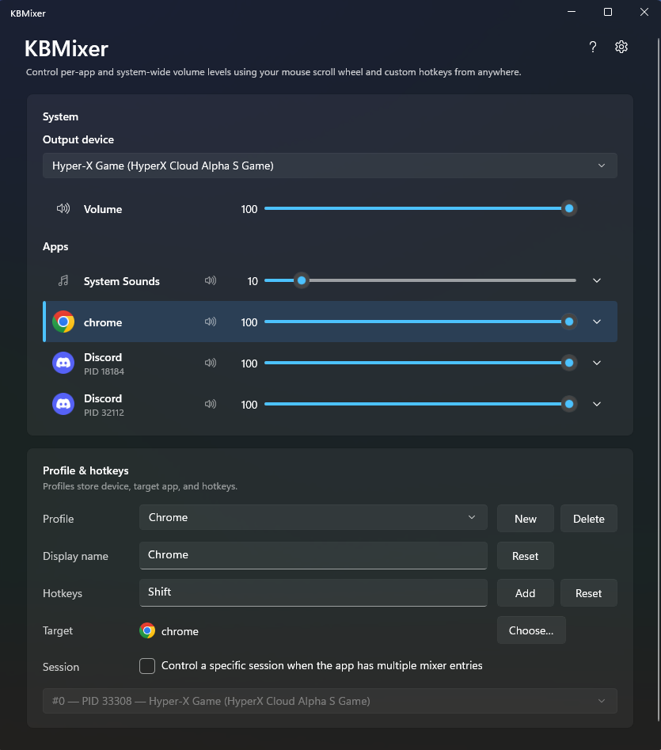

KBMixer
Control per-app volume with hotkeys + scroll wheel, from anywhere on Windows
Download latest releaseWindows 10 1903+ · 64-bit · free and open source

-
Per-app volume, no window switching
Adjust Spotify, Discord, your game, or anything else without alt-tabbing to the Windows volume mixer.
-
Hold a hotkey, scroll to adjust
Bind a global hotkey to each app and turn your mouse wheel into a dedicated volume knob.
-
Lightweight and out of the way
Runs quietly in the system tray, remembers your channels, and starts working the moment you launch it.